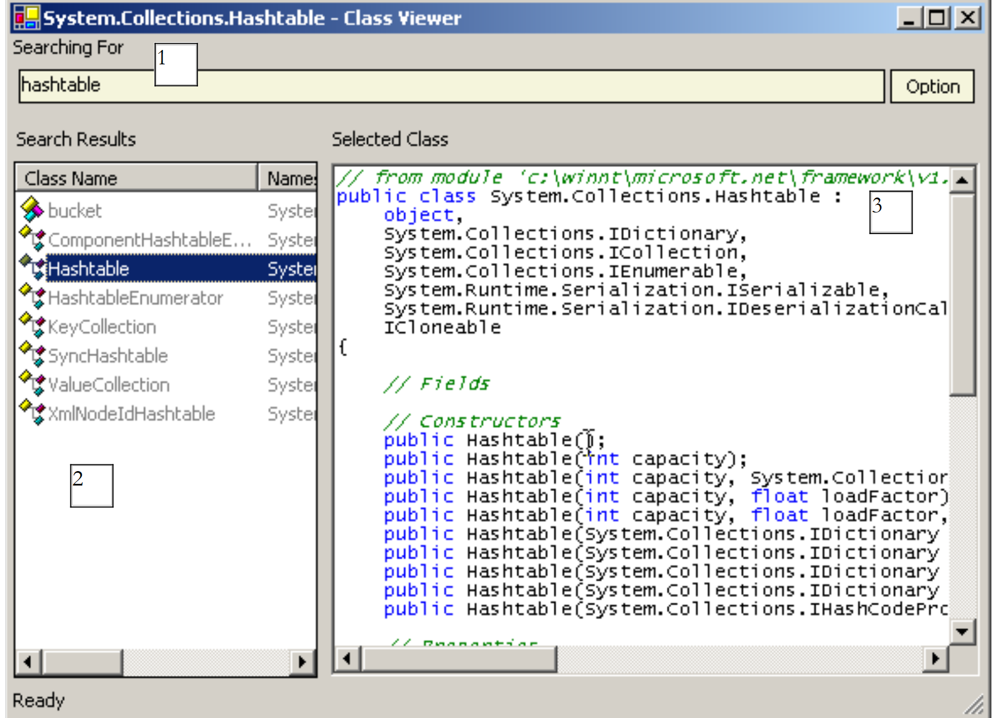
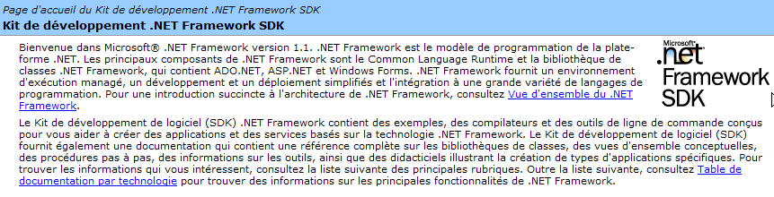
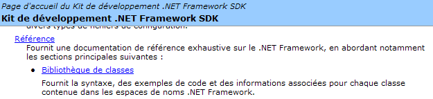
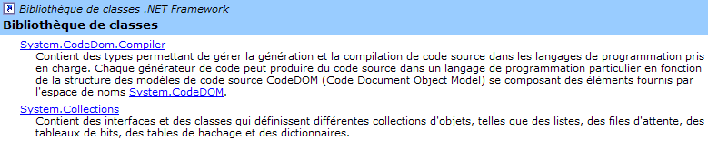
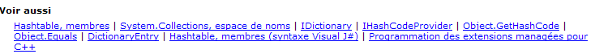
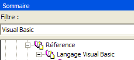
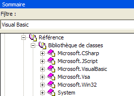
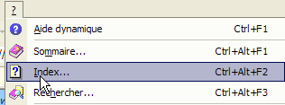

4. 常用类 .NET
本文将介绍 .NET 平台中的一些类，即使对于初学者来说也颇具参考价值。首先，我们将展示如何获取关于数百个可用类的详细信息。
4.1. 使用 SDK.NET 寻求帮助
4.1.1. wincv
如果仅安装了 SDK 而未安装 Visual Studio.NET，则可以使用通常位于 SDK 目录树中的 wincv.exe 程序，例如 C:\Program Files\Microsoft Visual Studio。NET 2003\SDK\v1.1。启动该工具时，将显示以下界面：
 |
在 (1) 处输入所需类的名称。这将显示 (2) 处各种可能的主题。选择合适的主题，结果将显示在 (3) 处，此处为类 HashTable。如果已知要查找的类名，此方法适用。若要浏览 .NET，或者可以使用位于 SSK.Net 安装文件夹（例如 C:\Program Files\Microsoft Visual Studio .NET 2003\SDK\v1.

请点击 .NET Framework SDK Documentation 链接，以获取 .NET 类的概览：

在此，我们将点击 [Bibliothèque de classes] 链接。该页面列出了所有 .NET 类：

例如，我们点击链接 System.Collections。该命名空间包含多个实现集合的类，其中包括类 HashTable：

接下来我们查看下面的链接 HashTable：

我们将看到以下页面：

请注意下图中鼠标指针的位置。它指向一个用于指定所需编程语言的链接，此处为 Visual Basic。
该页面提供了该类的原型以及使用示例。请点击下方的链接 [Hashtable, membres]：

由此可获得该类的完整描述：

这是了解 SDK 及其类别的最佳方法。 当您已对某个类有所了解，但忘记了其中某些成员时，WinCV 工具便派上用场。此时，WinCV 可帮助您快速查找该类及其成员。
4.2. 使用 VS.NET 查找类相关帮助
以下提供一些使用 Visual Studio.NET 查找帮助的指引
4.2.1. “帮助”选项
请选择菜单中的 [?] 选项。

此时将显示以下窗口：

在下拉列表中，可以选择一个帮助过滤器。这里，我们将选择过滤器 [Visual Basic]。

有两项帮助内容非常有用：
- 关于 VB.NET 语言本身的帮助（语法）
- 关于VB.NET语言可用的classes.NET帮助
可通过 [Visual Studio.NET/Visual Basic et Visual C#/Reference/Visual Basic] 访问 VB.NET 语言帮助：

将显示以下帮助页面：

在此基础上，通过各个子栏目，我们可以获取关于 VB.NET 不同主题的帮助。请特别关注 VB.NET 的教程：

若要访问 .NET 平台的各类课程，请选择 [Visual Studio.NET/.NET Framework] 帮助。

我们将特别关注[Référence/Bibliothèque de classes]这一部分：

假设我们关注类 [ArrayList]。它位于命名空间 [System.Collections] 中。必须了解这一点，否则建议采用下文所述的搜索方法。我们将获得以下帮助信息：

链接 [ArrayList, classe] 提供了该类的概览：

所有类都存在此类页面。该页面提供了该类的摘要及示例。如需查看该类的成员描述，请点击链接 [ArrayList, membres]：

4.2.2. 帮助/索引

选项 [Aide/index] 允许进行比之前更精准的帮助搜索。只需输入要查找的关键词即可：

与前一种方法相比，此方法的优势在于无需了解所查找内容在帮助系统中的具体位置。进行定向搜索时，这可能是更优选的方法，而另一种方法则更适合用于探索帮助文档提供的全部内容。
4.3. String 类
String 类拥有许多属性和方法。以下列举其中部分：
字符串的字符数 | |
默认索引属性。[String].Chars(i) 表示字符串中的第 i 个字符 | |
如果字符串以 value 结尾，则返回 true | |
如果字符串以 value 开头，则返回 true | |
如果字符串等于 value，则返回 true | |
返回字符串中 value 的第一个位置——搜索从第 0 个字符开始 | |
返回字符串 value 在字符串中的第一个位置——搜索从第 0 个字符开始 | |
类方法——返回一个字符串，该字符串是将数组 value 的值与分隔符 separator 连接而成的结果 | |
返回当前字符串的副本，其中字符 oldChar 已被字符 newChar 替换 | |
将字符串视为由 separator 数组中的字符分隔的一系列字段。结果是这些字段的数组 | |
当前字符串中从位置 startIndex 开始、长度为 length 个字符的子字符串 | |
将当前字符串转换为小写 | |
将当前字符串转换为大写 | |
去除当前字符串首尾的空格 |
字符串 C 可以视为一个字符数组。因此
- C.Chars(i) 表示 C 字符串中的第 i 个字符
- C.Length 是 C 中的字符数
考虑以下示例：
' 选项
Option Strict On
Option Explicit On
' 命名空间
Imports System
Module test
Sub Main()
Dim uneChaine As String = "l'oiseau vole au-dessus des nuages"
affiche("uneChaine=" + uneChaine)
affiche("uneChaine.Length=" & uneChaine.Length)
affiche("chaine[10]=" + uneChaine.Chars(10))
affiche("uneChaine.IndexOf(""vole"")=" & uneChaine.IndexOf("vole"))
affiche("uneChaine.IndexOf(""x"")=" & uneChaine.IndexOf("x"))
affiche("uneChaine.LastIndexOf('a')=" & uneChaine.LastIndexOf("a"c))
affiche("uneChaine.LastIndexOf('x')=" & uneChaine.LastIndexOf("x"c))
affiche("uneChaine.Substring(4,7)=" + uneChaine.Substring(4, 7))
affiche("uneChaine.ToUpper()=" + uneChaine.ToUpper())
affiche("uneChaine.ToLower()=" + uneChaine.ToLower())
affiche("uneChaine.Replace('a','A')=" + uneChaine.Replace("a"c, "A"c))
Dim champs As String() = uneChaine.Split(Nothing)
Dim i As Integer
For i = 0 To champs.Length - 1
affiche("champs[" & i & "]=[" & champs(i) & "]")
Next i
affiche("Join("":"",champs)=" + System.String.Join(":", champs))
affiche("("" abc "").Trim()=[" + " abc ".Trim() + "]")
End Sub
' 显示
Sub affiche(ByVal msg As [String])
' 显示消息
Console.Out.WriteLine(msg)
End Sub
End Module
运行结果如下：
dos>vbc string1.vb
dos>string1
uneChaine=l'oiseau vole au-dessus des nuages
uneChaine.Length=34
chaine[10]=o
uneChaine.IndexOf("vole")=9
uneChaine.IndexOf("x")=-1
uneChaine.LastIndexOf('a')=30
uneChaine.LastIndexOf('x')=-1
uneChaine.Substring(4,7)=seau vo
uneChaine.ToUpper()=L'OISEAU VOLE AU-DESSUS DES NUAGES
uneChaine.ToLower()=l'oiseau vole au-dessus des nuages
uneChaine.Replace('a','A')=l'oiseAu vole Au-dessus des nuAges
champs[0]=[l'oiseau]
champs[1]=[vole]
champs[2]=[au-dessus]
champs[3]=[des]
champs[4]=[nuages]
Join(":",champs)=l'oiseau:vole:au-dessus:des:nuages
(" abc ").Trim()=[abc]
让我们来看一个新例子：
' 选项
Option Strict On
Option Explicit On
' 命名空间
Imports System
Module string2
Sub Main()
' 待分析的行
Dim ligne As String = "un:deux::trois:"
' 字段分隔符
Dim séparateurs() As Char = {":"c}
' 拆分
Dim champs As String() = ligne.Split(séparateurs)
Dim i As Integer
For i = 0 To champs.Length - 1
Console.Out.WriteLine(("Champs[" & i & "]=" & champs(i)))
Next i
' 连接
Console.Out.WriteLine(("join=[" + System.String.Join(":", champs) + "]"))
End Sub
End Module
以及运行结果：
类 String 中的 Split 方法可用于将字符串中的字段拆分到数组中。此处使用的该方法定义如下：
字符数组。这些字符代表用于分隔字符串中各字段的字符。因此，如果字符串为 [champ1, champ2, champ3]，则可使用 separator=new char() {","c}。如果分隔符是一连串空格，则使用 separator=nothing。 | |
字符串数组，其中每个元素都是字符串中的一个字段。 |
Join 方法是 String 类的静态方法：
字符串数组 | |
用作字段分隔符的字符串 | |
由数组 value 的元素连接而成，并以字符串 separator 分隔的字符串。 |
4.4. Array 类
Array 类实现了数组。在本示例中，我们将使用以下属性和方法：
属性 - 数组的元素个数 | |
类方法 - 返回 value 在已排序数组 array 中的位置 - 从位置 index 开始搜索，并包含 length 个元素 | |
类方法——将 length 中的元素从 sourceArray 复制到 destinationArray——同时创建 destinationArray | |
类方法 - 对数组 array 进行排序 - 该数组必须包含具有默认排序函数的数据类型（字符串、数字）。 |
以下程序演示了 Array 类的用法：
' 选项
Option Strict On
Option Explicit On
' 命名空间
Imports System
Module test
Sub Main()
' 读取通过键盘输入的数组元素
Dim terminé As [Boolean] = False
Dim i As Integer = 0
Dim éléments1 As Double() = Nothing
Dim éléments2 As Double() = Nothing
Dim élément As Double = 0
Dim réponse As String = Nothing
Dim erreur As [Boolean] = False
While Not terminé
' 问题
Console.Out.Write(("Elément (réel) " & i & " du tableau (rien pour terminer) : "))
' 读取回答
réponse = Console.ReadLine().Trim()
' 若字符串为空则结束输入
If réponse.Equals("") Then
Exit While
End If
' 验证输入
Try
élément = [Double].Parse(réponse)
erreur = False
Catch
Console.Error.WriteLine("Saisie incorrecte, recommencez")
erreur = True
End Try
' 若无错误
If Not erreur Then
' 新建数组以容纳新元素
éléments2 = New Double(i) {}
' 将旧数组复制到新数组
If i <> 0 Then
Array.Copy(éléments1, éléments2, i)
End If
' 新数组成为旧数组
éléments1 = éléments2
' 不再需要新数组
éléments2 = Nothing
' 插入新元素
éléments1(i) = élément
' 数组中多了一个元素
i += 1
End If
End While
' 显示未排序的数组
System.Console.Out.WriteLine("Tableau non trié")
For i = 0 To éléments1.Length - 1
Console.Out.WriteLine(("éléments[" & i & "]=" & éléments1(i)))
Next i
' 对表格进行排序
System.Array.Sort(éléments1)
' 显示已排序的表格
System.Console.Out.WriteLine("Tableau trié")
For i = 0 To éléments1.Length - 1
Console.Out.WriteLine(("éléments[" & i & "]=" & éléments1(i)))
Next i
' 搜索
While Not terminé
' 提问
Console.Out.Write("Elément cherché (rien pour arrêter) : ")
' 阅读并核对答案
réponse = Console.ReadLine().Trim()
' 结束了吗？
If réponse.Equals("") Then
Exit While
End If
' 核对
Try
élément = [Double].Parse(réponse)
erreur = False
Catch
Console.Error.WriteLine("Saisie incorrecte, recommencez")
erreur = True
End Try
' 如果没有错误
If Not erreur Then
' 在排序数组中查找该元素
i = System.Array.BinarySearch(éléments1, 0, éléments1.Length, élément)
' 显示结果
If i >= 0 Then
Console.Out.WriteLine(("Trouvé en position " & i))
Else
Console.Out.WriteLine("Pas dans le tableau")
End If
End If
End While
End Sub
End Module
屏幕输出结果如下：
Elément (réel) 0 du tableau (rien pour terminer) : 10,4
Elément (réel) 1 du tableau (rien pour terminer) : 5,2
Elément (réel) 2 du tableau (rien pour terminer) : 8,7
Elément (réel) 3 du tableau (rien pour terminer) : 3,6
Elément (réel) 4 du tableau (rien pour terminer) :
Tableau non trié
éléments[0]=10,4
éléments[1]=5,2
éléments[2]=8,7
éléments[3]=3,6
Tableau trié
éléments[0]=3,6
éléments[1]=5,2
éléments[2]=8,7
éléments[3]=10,4
Elément cherché (rien pour arrêter) : 8,7
Trouvé en position 2
Elément cherché (rien pour arrêter) : 11
Pas dans le tableau
Elément cherché (rien pour arrêter) : a
Saisie incorrecte, recommencez
Elément cherché (rien pour arrêter) :
程序的第一部分根据用户通过键盘输入的数值构建一个数组。由于无法预先确定用户将输入多少个元素，因此无法预先设定数组的尺寸。因此，我们使用两个数组 éléments1 和 éléments2 进行操作。
' 新建数组以容纳新元素
éléments2 = New Double(i) {}
' 将旧数组复制到新数组
If i <> 0 Then
Array.Copy(éléments1, éléments2, i)
End If
' 新数组成为旧数组
éléments1 = éléments2
' 不再需要新数组
éléments2 = Nothing
' 插入新元素
éléments1(i) = élément
' 数组中多了一个元素
i += 1
表 éléments1 包含当前已输入的值。当用户添加新值时，系统会创建一个表 éléments2，其元素数量比 éléments1 多一个， 将 éléments1 的内容复制到 éléments2（即 Array.Copy）中， 让 éléments1 指向 éléments2，最后将新元素添加到 éléments1 中。 这是一个复杂的过程，如果不用固定大小的数组（Array），而改用可变大小的数组（ArrayList），则可以简化该过程。
数组通过方法 Array.Sort 进行排序。该方法可通过不同参数调用，以指定排序规则。若不带参数，则默认按升序排序。最后，方法 Array.BinarySearch 用于在已排序的数组中查找元素。
4.5. ArrayList类
类 ArrayList 允许在程序运行期间实现可变大小的数组，而前面的类 Array 则不支持此功能。以下是一些常见的属性和方法：
构建一个空列表 | |
集合中的元素数量 | |
将 value 对象添加到集合末尾 | |
清空列表 | |
列表中 value 对象的索引，若不存在则返回 -1 | |
同上，但从第 n 号元素开始搜索 startIndex | |
同上，但返回列表中 value 的最后一次出现索引 | |
同上，但从第 n 号元素开始搜索startIndex | |
如果列表中存在该对象，则将其移除 | |
从列表中移除索引为 index 的元素 | |
返回列表中 value 对象的位置，若不存在则返回 -1。列表必须已排序 | |
对列表进行排序。该列表必须包含具有预定义排序关系的对象（字符串、数字） | |
根据由比较函数建立的排序关系对列表进行排序 |
让我们重新审视之前使用 Array 类型对象处理的示例，并将其转换为使用 ArrayList 类型对象进行处理：
' 选项
Option Strict On
Option Explicit On
' 命名空间
Imports System
Imports System.Collections
Module test
Sub Main()
' 读取通过键盘输入的数组元素
Dim terminé As [Boolean] = False
Dim i As Integer = 0
Dim éléments As New ArrayList
Dim élément As Double = 0
Dim réponse As String = Nothing
Dim erreur As [Boolean] = False
While Not terminé
' 问题
Console.Out.Write(("Elément (réel) " & i & " du tableau (rien pour terminer) : "))
' 读取响应
réponse = Console.ReadLine().Trim()
' 若字符串为空则结束输入
If réponse.Equals("") Then
Exit While
End If
' 验证输入
Try
élément = Double.Parse(réponse)
erreur = False
Catch
Console.Error.WriteLine("Saisie incorrecte, recommencez")
erreur = True
End Try
' 若无错误
If Not erreur Then
' 数组中增加一个元素
éléments.Add(élément)
End If
End While
' 显示未排序数组
System.Console.Out.WriteLine("Tableau non trié")
For i = 0 To éléments.Count - 1
Console.Out.WriteLine(("éléments[" & i & "]=" & éléments(i).ToString))
Next i ' tri du tableau
éléments.Sort()
' 显示已排序数组
System.Console.Out.WriteLine("Tableau trié")
For i = 0 To éléments.Count - 1
Console.Out.WriteLine(("éléments[" & i & "]=" & éléments(i).ToString))
Next i
' 搜索
While Not terminé
' 问题
Console.Out.Write("Elément cherché (rien pour arrêter) : ")
' 阅读并核对答案
réponse = Console.ReadLine().Trim()
' 结束了吗？
If réponse.Equals("") Then
Exit While
End If
' 核对
Try
élément = [Double].Parse(réponse)
erreur = False
Catch
Console.Error.WriteLine("Saisie incorrecte, recommencez")
erreur = True
End Try
' 如果没有错误
If Not erreur Then
' 在排序数组中查找该元素
i = éléments.BinarySearch(élément)
' 显示响应
If i >= 0 Then
Console.Out.WriteLine(("Trouvé en position " & i))
Else
Console.Out.WriteLine("Pas dans le tableau")
End If
End If
End While
End Sub
End Module
执行结果如下：
Elément (réel) 0 du tableau (rien pour terminer) : 10,4
Elément (réel) 0 du tableau (rien pour terminer) : 5,2
Elément (réel) 0 du tableau (rien pour terminer) : a
Saisie incorrecte, recommencez
Elément (réel) 0 du tableau (rien pour terminer) : 3,7
Elément (réel) 0 du tableau (rien pour terminer) : 15
Elément (réel) 0 du tableau (rien pour terminer) :
Tableau non trié
éléments[0]=10,4
éléments[1]=5,2
éléments[2]=3,7
éléments[3]=15
Tableau trié
éléments[0]=3,7
éléments[1]=5,2
éléments[2]=10,4
éléments[3]=15
Elément cherché (rien pour arrêter) : a
Saisie incorrecte, recommencez
Elément cherché (rien pour arrêter) : 15
Trouvé en position 3
Elément cherché (rien pour arrêter) : 1
Pas dans le tableau
Elément cherché (rien pour arrêter) :
4.6. Hashtable 类
Hashtable 类用于实现哈希表。可以将哈希表视为一个两列数组：
 |
键是唯一的，c.a.d。即不能存在两个相同的键。Hashtable 类的主要方法和属性如下：
创建一个空字典 | |
在字典中添加一行 (key,value)，其中 key 和 value 是对象引用。 | |
从字典中删除键为 key 的条目 | |
清空字典 | |
如果键 key 属于字典，则返回 true。 | |
| 如果值 value 属于字典，则返回 true。 |
属性：字典中（键、值）对的数量 | |
属性：字典键的集合 | |
属性：字典值的集合 | |
索引属性：用于获取或设置与键 key 关联的值 |
请看以下示例程序：
' 选项
Option Strict On
Option Explicit On
' 命名空间
Imports System
Imports System.Collections
Module test
Sub Main()
Dim liste() As [String] = {"jean:20", "paul:18", "mélanie:10", "violette:15"}
Dim i As Integer
Dim champs As [String]() = Nothing
Dim séparateurs() As Char = {":"c}
' 字典填充
Dim dico As New Hashtable
For i = 0 To liste.Length - 1
champs = liste(i).Split(séparateurs)
dico.Add(champs(0), champs(1))
Next i
' 字典中的元素数量
Console.Out.WriteLine(("Le dictionnaire a " & dico.Count & " éléments"))
' 键列表
Console.Out.WriteLine("[Liste des clés]")
Dim clés As IEnumerator = dico.Keys.GetEnumerator()
While clés.MoveNext()
Console.Out.WriteLine(clés.Current)
End While
' 值列表
Console.Out.WriteLine("[Liste des valeurs]")
Dim valeurs As IEnumerator = dico.Values.GetEnumerator()
While valeurs.MoveNext()
Console.Out.WriteLine(valeurs.Current)
End While
' 键值对列表
Console.Out.WriteLine("[Liste des clés & valeurs]")
clés.Reset()
While clés.MoveNext()
Console.Out.WriteLine(("clé=" & clés.Current.ToString & " valeur=" & dico(clés.Current).ToString))
End While
' 删除键“paul”
Console.Out.WriteLine("[Suppression d'une clé]")
dico.Remove("paul")
' 键值对列表
Console.Out.WriteLine("[Liste des clés & valeurs]")
clés = dico.Keys.GetEnumerator()
While clés.MoveNext()
Console.Out.WriteLine(("clé=" & clés.Current.ToString & " valeur=" & dico(clés.Current).ToString))
End While
' 在字典中搜索
Dim nomCherché As [String] = Nothing
Console.Out.Write("Nom recherché (rien pour arrêter) : ")
nomCherché = Console.ReadLine().Trim()
Dim value As [Object] = Nothing
While Not nomCherché.Equals("")
If dico.ContainsKey(nomCherché) Then
value = dico(nomCherché)
Console.Out.WriteLine((nomCherché + "," + CType(value, [String])))
Else
Console.Out.WriteLine(("Nom " + nomCherché + " inconnu"))
End If
' 后续搜索
Console.Out.Write("Nom recherché (rien pour arrêter) : ")
nomCherché = Console.ReadLine().Trim()
End While
End Sub
End Module
执行结果如下：
Le dictionnaire a 4 éléments
[Liste des clés]
mélanie
paul
violette
jean
[Liste des valeurs]
10
18
15
20
[Liste des clés & valeurs]
clé=mélanie valeur=10
clé=paul valeur=18
clé=violette valeur=15
clé=jean valeur=20
[Suppression d'une clé]
[Liste des clés & valeurs]
clé=mélanie valeur=10
clé=violette valeur=15
clé=jean valeur=20
Nom recherché (rien pour arrêter) : paul
Nom paul inconnu
Nom recherché (rien pour arrêter) : mélanie
mélanie,10
Nom recherché (rien pour arrêter) :
该程序还使用一个 IEnumerator 对象来遍历 ICollection 类型字典的键值对集合（参见上文的 Keys 和 Values 属性）。 集合是一组可遍历的对象。ICollection 接口定义如下：

属性 Count 允许我们获取集合中元素的数量。接口 ICollection 继承自接口 IEnumerable：

该接口仅包含一个方法 GetEnumerator，该方法可让我们获取一个类型为 IEnumerator 的对象：

ICollection集合中的GetEnumerator()方法允许我们使用以下方法遍历该集合：
将光标定位到集合中的下一个元素。如果该元素存在，则返回 true；否则返回 false。第一个 MoveNext 将光标定位到第一个元素。此时，集合的“当前”元素可通过枚举器的 Current 属性获取 | |
属性：集合的当前元素 | |
将迭代器重置到集合开头，即 c.a.d，位于第一个元素之前。 |
因此，C语言中遍历集合元素（ICollection）的结构如下：
' 定义集合
dim C as ICollection C=...
' 获取该集合的迭代器
dim itérateur as IEnumerator=C.GetEnumerator();
' 使用该迭代器遍历集合
while(itérateur.MoveNext())
' 当前有一个元素
' 调用 itérateur.Current
end while
4.7. StreamReader 类
StreamReader 类用于读取文件内容。以下是该类的一些属性和方法：
从文件 path 打开一个流。如果该文件不存在，则抛出异常 | |
关闭该流 | |
从已打开的流中读取一行 | |
从当前位置读取流的剩余部分 |
以下是一个示例：
' 选项
Option Strict On
Option Explicit On
' 命名空间
Imports System
Imports System.Collections
Imports System.IO
Module test
Sub Main()
Dim ligne As String = Nothing
Dim fluxInfos As StreamReader = Nothing
' 读取文件内容
Try
fluxInfos = New StreamReader("infos.txt")
ligne = fluxInfos.ReadLine()
While Not (ligne Is Nothing)
System.Console.Out.WriteLine(ligne)
ligne = fluxInfos.ReadLine()
End While
Catch e As Exception
System.Console.Error.WriteLine("L'erreur suivante s'est produite : " & e.ToString)
Finally
Try
fluxInfos.Close()
Catch
End Try
End Try
End Sub
End Module
及其执行结果：
dos>more infos.txt
12620:0:0
13190:0,05:631
15640:0,1:1290,5
24740:0,15:2072,5
31810:0,2:3309,5
39970:0,25:4900
48360:0,3:6898,5
55790:0,35:9316,5
92970:0,4:12106
127860:0,45:16754,5
151250:0,5:23147,5
172040:0,55:30710
195000:0,6:39312
0:0,65:49062
dos>file1
12620:0:0
13190:0,05:631
15640:0,1:1290,5
24740:0,15:2072,5
31810:0,2:3309,5
39970:0,25:4900
48360:0,3:6898,5
55790:0,35:9316,5
92970:0,4:12106
127860:0,45:16754,5
151250:0,5:23147,5
172040:0,55:30710
195000:0,6:39312
0:0,65:49062
4.8. StreamWriter 类
类 StreamWriter 用于向文件写入数据。以下是该类的一些属性和方法：
从文件 path 打开一个写入流。如果无法创建该文件，则会抛出异常 | |
若为真，则写入流时不经过缓冲区；否则写入流并非即时进行：首先写入缓冲区，待缓冲区满后再写入流。默认使用缓冲模式。该模式适用于文件流，但通常不适用于网络流。 | |
用于设置或查询方法 WriteLine 所使用的换行符 | |
关闭数据流 | |
在写入流中写入一行 | |
将缓冲区写入流 |
请看以下示例：
' 选项
Option Strict On
Option Explicit On
' 命名空间
Imports System
Imports System.Collections
Imports System.IO
Module test
Sub Main()
Dim ligne As String = Nothing ' une ligne de texte
Dim fluxInfos As StreamWriter = Nothing ' le fichier texte
Try
' 创建文本文件
fluxInfos = New StreamWriter("infos.txt")
' 读取键盘输入的行
Console.Out.Write("ligne (rien pour arrêter) : ")
ligne = Console.In.ReadLine().Trim()
' 只要输入的行不为空就循环
While ligne <> ""
' 将行写入文本文件
fluxInfos.WriteLine(ligne)
' 读取键盘输入的新行
Console.Out.Write("ligne (rien pour arrêter) : ")
ligne = Console.In.ReadLine().Trim()
End While
Catch e As Exception
System.Console.Error.WriteLine("L'erreur suivante s'est produite : " & e.ToString)
Finally
' 关闭文件
Try
fluxInfos.Close()
Catch
End Try
End Try
End Sub
End Module
以及运行结果：
dos>file2
ligne (rien pour arrêter) : ligne1
ligne (rien pour arrêter) : ligne2
ligne (rien pour arrêter) : ligne3
ligne (rien pour arrêter) :
dos>more infos.txt
ligne1
ligne2
ligne3
4.9. Regex 类
Regex 类支持正则表达式。正则表达式可用于验证字符串的格式。例如，我们可以验证表示日期的字符串是否符合 dd/mm/yy 格式。为此，我们需要使用一个模式，并将字符串与该模式进行比较。因此，在此示例中，j、m 和 a 必须是数字。 因此，有效的日期格式模式为“\d\d/\d\d/\d\d”，其中符号 \d 表示数字。模式中可使用的符号如下（微软文档）：
描述 | |
将后续字符标记为特殊字符或字面字符。例如，“n”表示字符“n”。“\n”表示换行符。字符序列“\\”表示“\”，而“\("表示“(”。 | |
表示输入的开头。 | |
表示输入结束。 | |
表示前一个字符零次或多次出现。因此，“zo*”表示“z”或“zoo”。 | |
匹配前一个字符一次或多次。因此，“zo+”匹配“zoo”，但不匹配“z”。 | |
匹配前一个字符零次或一次。例如，“a?ve?”匹配“lever”中的“ve”。 | |
匹配除换行符以外的任何单个字符。 | |
| 搜索 modèle 并记录匹配结果。可以通过 Item [0]...[n] 从获得的 Matches 集合中提取匹配的子字符串。 若要查找包含括号 ( ) 内的字符的匹配项，请使用 "\(" 或 "\)"。 |
| 匹配 x 或 y。例如，“z|foot”匹配“z”或“foot”。“(z|f)oo”匹配“zoo”或“foo”。 |
| n 是一个非负整数。精确匹配 n 倍的该字符。例如，“o{2}”不匹配“Bob”中的“o”，而是匹配“fooooot”中的前两个“o”。 |
| n 是一个非负整数。匹配该字符至少 n 次。 例如，“o{2,}”不匹配“Bob”中的“o”，而是匹配“fooooot”中的所有“o”。“o{1,}”等同于“o+”，而“o{0,}”等同于“o*”。 |
| m 和 n 是非负整数。 表示该字符出现次数不少于 n 次，且不超过 m 次。例如，“o{1,3}”匹配“foooooot”中的前三个“o”，而“o{0,1}”等同于“o?”。 |
| 字符集。匹配所列出的任意一个字符。例如，“[abc]”匹配“plat”中的“a”。 |
| 否定字符集。匹配所有未列出的字符。例如，“[^abc]”匹配“plat”中的“p”。 |
| 字符范围。匹配指定字符序列中的任何字符。例如，“[a-z]”匹配“a”到“z”之间的所有小写字母。 |
| 负字符集。匹配指定字符集中的所有非字符。例如，“[^m-z]”匹配“m”和“z”之间的所有非字符。 |
匹配表示单词的边界，即单词与空格之间的位置。例如，“er\b”匹配“lever”中的“er”，但不匹配“verbe”中的“er”。 | |
对应不代表单词的边界。“en*t\B”对应“bien entendu”中的“ent”。 | |
匹配代表数字的字符。等同于 [0-9]。 | |
对应于不代表数字的字符。等同于 [^0-9]。 | |
对应于换行符。 | |
对应换行符。 | |
对应回车符。 | |
对应所有空白字符，包括空格、制表符、换行符等。等同于“[ \f\n\r\t\v]”。 | |
匹配所有非空白字符。等同于“[^ \f\n\r\t\v]”。 | |
匹配一个制表符。 | |
对应一个垂直制表符。 | |
对应于任何代表单词且包含下划线的字符。等同于“[A-Za-z0-9_]”。 | |
对应于任何不代表单词的字符。等同于“[^A-Za-z0-9_]”。 | |
| 对应于 num，其中 num 是一个正整数。指代存储的映射关系。例如，"(.)\1" 对应于两个连续的相同字符。 |
| 对应于 n，其中 n 是一个八进制转义值。八进制转义值必须包含 1、2 或 3 个数字。例如，“\11”和“\011”都对应于一个制表符。 "\0011" 等同于 "\001" & "1"。八进制转义值不得超过 256。如果超过，则表达式中仅考虑前两位数字。允许在正则表达式中使用 ASCII 代码。 |
| 对应于 n，其中 n 是一个十六进制转义值。 十六进制转义值必须包含两个数字。例如，“\x41”对应“A”。“\x041”等同于“\x04”和“1”。允许在正则表达式中使用代码 ASCII。 |
模板中的一个元素可以出现一次或多次。以下是关于符号 \d（代表 1 个数字）的一些示例：
模板 | 含义 |
一个数字 | |
0 或 1 位数字 | |
0个或多个数字 | |
1个或多个数字 | |
2个数字 | |
至少3位数字 | |
5至7位数字 |
现在设想一个能够描述字符串预期格式的模型：
目标字符串 | 模式 |
\d{2}/\d{2}/\d{2} | |
\d{2}:\d{2}:\d{2} | |
\d+ | |
\s* | |
\s*\d+\s* | |
\s*[+|-]?\s*\d+\s* | |
\s*\d+(.\d*)?\s* | |
\s*[+|]?\s*\d+(.\d*)?\s* | |
\bjuste\b | |
可以指定在字符串中的哪个位置搜索该模式：
模式 | 含义 |
该模板位于字符串开头 | |
模板结束字符串 | |
模板开始并结束字符串 | |
从字符串开头开始，在整个字符串中搜索该模式。 |
要搜索的字符串 | 模式 |
!$ | |
\.$ | |
^// | |
^\s*\w+\s*$ | |
^\s*\w+\s*\w+\s*$ | |
\bsecret\b |
模式的子集可以被“提取”。因此，我们不仅可以验证一个字符串是否符合特定模式，还可以从该字符串中提取那些用圆括号括起的、与模式子集对应的元素。 例如，若要分析包含日期格式 dd/mm/yy 的字符串，并提取其中的 dd、mm、yy 元素，可使用正则表达式 (\d\d)/(\d\d)/(\d\d)。
4.9.1. 验证字符串是否符合给定模式
Regex 类型的对象构建方式如下：
构造函数会根据作为参数传递的模板（pattern）创建一个“正则表达式”对象。一旦构建了正则表达式模板，即可使用方法 IsMatch 将其与字符串进行比较：
如果输入字符串与正则表达式模式匹配，IsMatch 将返回 true。以下是一个示例：
' 选项
Option Strict On
Option Explicit On
' 命名空间
Imports System
Imports System.Collections
Imports System.Text.RegularExpressions
Module regex1
Sub Main()
' 正则表达式模板
Dim modèle1 As String = "^\s*\d+\s*$"
Dim regex1 As New Regex(modèle1)
' 将实例与模式进行比较
Dim exemplaire1 As String = " 123 "
If regex1.IsMatch(exemplaire1) Then
affiche(("[" + exemplaire1 + "] correspond au modèle [" + modèle1 + "]"))
Else
affiche(("[" + exemplaire1 + "] ne correspond pas au modèle [" + modèle1 + "]"))
End If
Dim exemplaire2 As String = " 123a "
If regex1.IsMatch(exemplaire2) Then
affiche(("[" + exemplaire2 + "] correspond au modèle [" + modèle1 + "]"))
Else
affiche(("[" + exemplaire2 + "] ne correspond pas au modèle [" + modèle1 + "]"))
End If
End Sub
' 显示
Sub affiche(ByVal msg As String)
Console.Out.WriteLine(msg)
End Sub
End Module
以及执行结果：
dos>vbc /r:system.dll regex1.vb
Compilateur Microsoft (R) Visual Basic .NET version 7.10.3052.4 pour Microsoft (R) .NET Framework version 1.1.4322.573
dos>regex1
[ 123 ] correspond au modèle [^\s*\d+\s*$]
[ 123a ] ne correspond pas au modèle [^\s*\d+\s*$]
4.9.2. 查找字符串中所有符合模式的元素
Matches 方法
返回字符串 input 中符合该模式的元素集合，如下例所示：
' 选项
Option Strict On
Option Explicit On
' 命名空间
Imports System
Imports System.Collections
Imports System.Text.RegularExpressions
Module regex2
Sub Main()
' 实例中模式的多个匹配项
Dim modèle2 As String = "\d+"
Dim regex2 As New Regex(modèle2) '
Dim exemplaire3 As String = " 123 456 789 "
Dim résultats As MatchCollection = regex2.Matches(exemplaire3)
affiche(("Modèle=[" + modèle2 + "],exemplaire=[" + exemplaire3 + "]"))
affiche(("Il y a " & résultats.Count & " occurrences du modèle dans l'exemplaire "))
Dim i As Integer
For i = 0 To résultats.Count - 1
affiche((résultats(i).Value & " en position " & résultats(i).Index))
Next i
End Sub
'显示
Sub affiche(ByVal msg As String)
Console.Out.WriteLine(msg)
End Sub
End Module
类 MatchCollection 具有一个 Count 属性，该属性表示集合中元素的数量。 如果 résultats 是对象 MatchCollection，则 résultats(i) 是该集合中的第 i 个元素，且类型为 Match。 在本例中，résultats 是字符串 exemplaire3 中符合 modèle2 模式的所有元素的集合，而 résultats(i) 是其中一个元素。 Match 类有两个我们在此感兴趣的属性：
- Value：Match对象的值，即与模型对应的元素
- Index：该元素在遍历的字符串中被找到的位置
执行上述程序的结果如下：
dos>vbc /r:system.dll regex2.vb
Compilateur Microsoft (R) Visual Basic .NET version 7.10.3052.4p our Microsoft (R) .NET Framework version 1.1.4322.573
dos>regex2
Modèle=[\d+],exemplaire=[ 123 456 789 ]
Il y a 3 occurrences du modèle dans l'exemplaire
123 en position 2
456 en position 7
789 en position 12
4.9.3. 提取模式的子集
可以“提取”模式的子集。因此，我们不仅可以验证字符串是否符合特定模式，还可以从该字符串中提取模式中用圆括号括起的子集对应的元素。 例如，若要解析包含日期格式 dd/mm/yy 的字符串，并提取其中的 dd、mm、yy 元素，可使用正则表达式 (\d\d)/(\d\d)/(\d\d)。请看以下示例：
' 选项
Option Strict On
Option Explicit On
' 命名空间
Imports System
Imports System.Collections
Imports System.Text.RegularExpressions
Module regex2
Sub Main()
' 从模板中提取元素
Dim modèle3 As String = "(\d\d):(\d\d):(\d\d)"
Dim regex3 As New Regex(modèle3)
Dim exemplaire4 As String = "Il est 18:05:49"
' 模板验证
Dim résultat As Match = regex3.Match(exemplaire4)
If résultat.Success Then
' 实例与模板匹配
affiche(("L'exemplaire [" + exemplaire4 + "] correspond au modèle [" + modèle3 + "]"))
' 显示组
Dim i As Integer
For i = 0 To résultat.Groups.Count - 1
affiche(("groupes[" & i & "]=[" & résultat.Groups(i).Value & "] en position " & résultat.Groups(i).Index))
Next i
Else
' 实例与模板不匹配
affiche(("L'exemplaire[" + exemplaire4 + " ne correspond pas au modèle [" + modèle3 + "]"))
End If
End Sub
'显示
Sub affiche(ByVal msg As String)
Console.Out.WriteLine(msg)
End Sub
End Module
执行该程序将产生以下结果：
dos>vbc /r:system.dll regex3.vb
Compilateur Microsoft (R) Visual Basic .NET version 7.10.3052.4
dos>regex3
L'exemplaire [Il est 18:05:49] correspond au modèle [(\d\d):(\d\d):(\d\d)]
groupes[0]=[18:05:49] en position 7
groupes[1]=[18] en position 7
groupes[2]=[05] en position 10
groupes[3]=[49] en position 13
新内容位于以下代码部分：
' 模板验证
Dim résultat As Match = regex3.Match(exemplaire4)
If résultat.Success Then
' 该实例与模板匹配
affiche(("L'exemplaire [" + exemplaire4 + "] correspond au modèle [" + modèle3 + "]"))
' 显示组
Dim i As Integer
For i = 0 To résultat.Groups.Count - 1
affiche(("groupes[" & i & "]=[" & résultat.Groups(i).Value & "] en position " & résultat.Groups(i).Index))
Next i
Else
字符串 exemplaire4 通过方法 Match 与模板 regex3 进行比较。该方法返回一个已介绍过的 Match 对象。在此我们使用了该类的两个新属性：
- Success：指示是否匹配
- Groups：集合，其中
- Groups[0] 对应于字符串中与模板
- Groups[i] (i>=1) 对应第 i 个括号组
如果结果类型为 Match， 则 résultats.Groups 属于 GroupCollection 类型，而 résultats.Groups[i] 属于 Group 类型。 Group 类有两个属性，我们在此使用的是：
- Value：Group 对象的值，该元素对应括号内的内容
- Index：该元素在遍历字符串中被找到的位置
4.9.4. 一个练习程序
寻找能够验证字符串是否符合特定模式的正则表达式，有时是一项真正的挑战。以下程序可用于练习。它需要一个模式和一个字符串，然后指出该字符串是否符合该模式。
' 选项
Option Strict On
Option Explicit On
' 命名空间
Imports System
Imports System.Collections
Imports System.Text.RegularExpressions
Imports Microsoft.visualbasic
Module regex4
Sub Main()
' 一个正则表达式模板
Dim modèle, chaine As String
Dim regex As Regex = Nothing
Dim résultats As MatchCollection
' 要求用户指定与该模板进行比较的模板和实例
Dim terminé1 As Boolean = False
Do While Not terminé1
Dim erreur As Boolean = True
Do While Not terminé1 And erreur
' 请求模板
Console.Out.Write("Tapez le modèle à tester ou fin pour arrêter :")
modèle = Console.In.ReadLine()
' 完成了吗？
If modèle.Trim().ToLower() = "fin" Then
terminé1 = True
Else
' 创建正则表达式
Try
regex = New Regex(modèle)
erreur = False
Catch ex As Exception
Console.Error.WriteLine(("Erreur : " + ex.Message))
End Try
End If
Loop
' 完成了吗？
If terminé1 Then Exit Sub
' 向用户询问要与该模板进行比较的实例
Dim terminé2 As Boolean = False
Do While Not terminé2
Console.Out.Write(("Tapez la chaîne à comparer au modèle [" + modèle + "] ou fin pour arrêter :"))
chaine = Console.In.ReadLine()
' 完成？
If chaine.Trim().ToLower() = "fin" Then
terminé2 = True
Else
' 进行比较
résultats = regex.Matches(chaine)
' 成功？
If résultats.Count = 0 Then
Console.Out.WriteLine("Je n'ai pas trouvé de correspondances")
Else
' 显示与模板匹配的元素
Dim i As Integer
For i = 0 To résultats.Count - 1
Console.Out.WriteLine(("J'ai trouvé la correspondance [" & résultats(i).Value & "] en position " & résultats(i).Index))
' 子元素
If résultats(i).Groups.Count <> 1 Then
Dim j As Integer
For j = 1 To (résultats(i).Groups.Count) - 1
Console.Out.WriteLine((ControlChars.Tab & "sous-élément [" & résultats(i).Groups(j).Value & "] en position " & résultats(i).Groups(j).Index))
Next j
End If
Next i
End If
End If
Loop
Loop
End Sub
'显示
Sub affiche(ByVal msg As String)
Console.Out.WriteLine(msg)
End Sub
End Module
以下是一个运行示例：
Tapez le modèle à tester ou fin pour arrêter :\d+
Tapez la chaîne à comparer au modèle [\d+] ou fin pour arrêter :123 456 789
J'ai trouvé la correspondance [123] en position 0
J'ai trouvé la correspondance [456] en position 4
J'ai trouvé la correspondance [789] en position 8
Tapez la chaîne à comparer au modèle [\d+] ou fin pour arrêter :fin
Tapez le modèle à tester ou fin pour arrêter :(\d\d):(\d\d)
Tapez la chaîne à comparer au modèle [(\d\d):(\d\d)] ou fin pour arrêter :14:15 abcd 17:18 xyzt
J'ai trouvé la correspondance [14:15] en position 0
sous-élément [14] en position 0
sous-élément [15] en position 3
J'ai trouvé la correspondance [17:18] en position 11
sous-élément [17] en position 11
sous-élément [18] en position 14
Tapez la chaîne à comparer au modèle [(\d\d):(\d\d)] ou fin pour arrêter :fin
Tapez le modèle à tester ou fin pour arrêter :^\s*\d+\s*$
Tapez la chaîne à comparer au modèle [^\s*\d+\s*$] ou fin pour arrêter : 1456
J'ai trouvé la correspondance [ 1456] en position 0
Tapez la chaîne à comparer au modèle [^\s*\d+\s*$] ou fin pour arrêter :fin
Tapez le modèle à tester ou fin pour arrêter :^\s*(\d+)\s*$
Tapez la chaîne à comparer au modèle [^\s*(\d+)\s*$] ou fin pour arrêter :1456
J'ai trouvé la correspondance [1456] en position 0
sous-élément [1456] en position 0
Tapez la chaîne à comparer au modèle [^\s*(\d+)\s*$] ou fin pour arrêter :abcd 1
456
Je n'ai pas trouvé de correspondances
Tapez la chaîne à comparer au modèle [^\s*(\d+)\s*$] ou fin pour arrêter :fin
Tapez le modèle à tester ou fin pour arrêter :fin
4.9.5. Split 方法
我们在类 String 中已经遇到过这个方法：
字符串被视为由数组 [separator] 中包含的字符分隔的一系列字段。结果是这些字段的数组。
此处字符串的字段分隔符是 separator 数组中的某个字符。Regex 类中的 Split 方法允许我们根据模式来指定分隔符：
字符串 [input] 被分解为各个字段，这些字段由一个分隔符分隔，该分隔符对应于当前对象 Regex 的模板。 例如，假设我们在一个文本文件中拥有形式为字段1、字段2、...、字段n的行。字段之间以逗号分隔，但逗号前后可能带有空格。 此时，类 string 中的方法 Split 并不适用。方法 RegEx 则提供了解决方案。若 line 是已读取的行，则可通过以下方式获取字段：
获取字段，如下例所示：
' 选项
Option Strict On
Option Explicit On
' 命名空间
Imports System
Imports System.Text.RegularExpressions
Module regex5
Sub Main()
' 一行
Dim ligne As String = "abc , def , ghi"
' 一个模板
Dim modèle As New Regex("\s*,\s*")
' 行拆分为字段
Dim champs As String() = modèle.Split(ligne)
' 显示
Dim i As Integer
For i = 0 To champs.Length - 1
Console.Out.WriteLine(("champs[" & i & "]=[" & champs(i) & "]"))
Next i
End Sub
End Module
执行结果：
dos>vbc /r:system.dll regex5.vb
Compilateur Microsoft (R) Visual Basic .NET version 7.10.3052.4
dos>regex5
champs[0]=[abc]
champs[1]=[def]
champs[2]=[ghi]
4.10. 类 BinaryReader 和 BinaryWriter
类 BinaryReader 和 BinaryWriter 用于读写二进制文件。考虑以下应用场景。我们希望编写一个程序，其调用方式如下：
该文本文件的内容如下：
程序如下：
' 选项
Option Strict On
Option Explicit On
' 命名空间
Imports System
Imports System.Text.RegularExpressions
Imports System.IO
' BinaryWriter()
Module bw1
' 语法 pg 文本 bin
' 读取文本文件（文本）并将内容存储在
' 二进制文件中
' 该文本文件包含形式为“姓名：年龄”的行
' 将其存储在字符串、整数结构中
Sub Main(ByVal arguments() As String)
' 需要 2 个参数
Dim nbArgs As Integer = arguments.Length
If nbArgs <> 2 Then
Console.Error.WriteLine("syntaxe : pg texte binaire")
Environment.Exit(1)
End If
' 以读取模式打开文本文件
Dim input As StreamReader = Nothing
Try
input = New StreamReader(arguments(0))
Catch ex As Exception
Console.Error.WriteLine("Erreur d'ouverture du fichier " & arguments(0) & "(" & ex.Message & ")")
Environment.Exit(2)
End Try
' 以写入模式打开二进制文件
Dim output As BinaryWriter = Nothing
Try
output = New BinaryWriter(New FileStream(arguments(1), FileMode.Create, FileAccess.Write))
Catch ex As Exception
Console.Error.WriteLine("Erreur d'ouverture du fichier " & arguments(1) & "(" & ex.Message & ")")
Environment.Exit(3)
End Try
' 读取文本文件 - 写入二进制文件
' 文本文件中的行
Dim ligne As String
' 行字段分隔符
Dim séparateur As New Regex("\s*:\s*")
' 年龄格式
Dim modAge As New Regex("\s*\d+\s*")
Dim numLigne As Integer = 0
Dim traitementFini As Boolean
Dim champs As String()
ligne = input.ReadLine()
While Not (ligne Is Nothing)
traitementFini = False
' 空行？
If ligne.Trim() = "" Then
traitementFini = True
End If
' 多一行
If Not traitementFini Then
numLigne += 1
' 一行：姓名：年龄
champs = séparateur.Split(ligne)
' 我们需要 2 个字段
If champs.Length <> 2 Then
Console.Error.WriteLine(("La ligne n° " & numLigne & " du fichier " & arguments(0) & " a un nombre de champs incorrect"))
' 下一行
traitementFini = True
End If
End If
If Not traitementFini Then
' 第二个字段必须是大于等于0的整数
If Not modAge.IsMatch(champs(1)) Then
Console.Error.WriteLine(("La ligne n° " & numLigne & " du fichier " & arguments(0) & " a un âge incorrect"))
' 下一行
traitementFini = True
End If
' 将数据写入二进制文件
output.Write(champs(0))
output.Write(Integer.Parse(champs(1)))
End If
'下一行
ligne = input.ReadLine()
End While
' 关闭文件
input.Close()
output.Close()
End Sub
End Module
让我们重点关注与类 BinaryWriter 相关的操作：
- 操作
output = New BinaryWriter(New FileStream(arguments(1), FileMode.Create, FileAccess.Write))
构造函数的参数必须是一个流（Stream）。此处是一个由文件（FileStream）构建的流，其内容如下：
- （续）
- 名称
- 要执行的操作，此处为 FileMode.Create，用于创建文件
- 访问类型，此处为 FileAccess.Write，表示对文件的写入访问
- 写入操作
' 将数据写入二进制文件
output.Write(champs(0))
output.Write(Integer.Parse(champs(1)))
类 BinaryWriter 提供了多种重载方法 Write，用于写入不同类型的简单数据
- 关闭数据流的操作
以下程序将提供前一次执行的结果。该程序同样接受两个参数：
因此，我们进行逆向操作。读取二进制文件以生成文本文件。如果生成的文本文件与原始文件完全一致，则说明文本→二进制→文本的转换过程已成功完成。代码如下：
' 选项
Option Strict On
Option Explicit On
' 命名空间
Imports System
Imports System.Text.RegularExpressions
Imports System.IO
Module br1
' pg二进制文本语法
' 读取二进制文件 bin，并将内容保存到文本文件（文本）中
' 二进制文件具有字符串、整数结构
' 文本文件中的行格式为 姓名 : 年龄
Sub Main(ByVal arguments() As String)
' 需要 2 个参数
Dim nbArgs As Integer = arguments.Length
If nbArgs <> 2 Then
Console.Error.WriteLine("syntaxe : pg binaire texte")
Environment.Exit(1)
End If
' 以读取模式打开二进制文件
Dim dataIn As BinaryReader = Nothing
Try
dataIn = New BinaryReader(New FileStream(arguments(0), FileMode.Open, FileAccess.Read))
Catch ex As Exception
Console.Error.WriteLine("Erreur d'ouverture du fichier " & arguments(0) & "(" & ex.Message & ")")
Environment.Exit(2)
End Try
' 以写入模式打开文本文件
Dim dataOut As StreamWriter = Nothing
Try
dataOut = New StreamWriter(arguments(1))
dataOut.AutoFlush = True
Catch ex As Exception
Console.Error.WriteLine("Erreur d'ouverture du fichier " & arguments(1) & "(" & ex.Message & ")")
Environment.Exit(3)
End Try
' 读取二进制文件 - 写入文本文件
Dim nom As String ' nom d'une personne
Dim age As Integer ' son âge
' 二进制文件处理循环
While True
' 读取名称
Try
nom = dataIn.ReadString()
Catch
' 文件结尾
Exit Sub
End Try
' 读取年龄
Try
age = dataIn.ReadInt32()
Catch
Console.Error.WriteLine("Le fichier " & arguments(0) + " ne semble pas avoir un format correct")
Exit Sub
End Try
' 写入文本文件
dataOut.WriteLine(nom & ":" & age)
System.Console.WriteLine(nom & ":" & age)
End While
' 关闭所有内容
dataIn.Close()
dataOut.Close()
End Sub
End Module
让我们重点关注与类 BinaryReader 相关的操作：
- 对象 BinaryReader 由以下操作打开
dataIn = New BinaryReader(New FileStream(arguments(0), FileMode.Open, FileAccess.Read))
构造函数的参数必须是一个流（Stream）。此处是一个由文件（FileStream）构建的流，其内容如下：
- （续）
- 名称
- 要执行的操作，此处为 FileMode.Open，用于打开现有文件
- 访问类型，此处为 FileAccess.Read，表示对文件的读取访问
- 读取操作
类 BinaryReader 提供了多种方法 ReadXX 用于读取不同类型的简单数据
- 关闭流的操作
如果按顺序执行这两个程序，将 personnes.txt 转换为 personnes.bin，然后将 personnes.bin 转换为 personnes.txt2，结果如下：